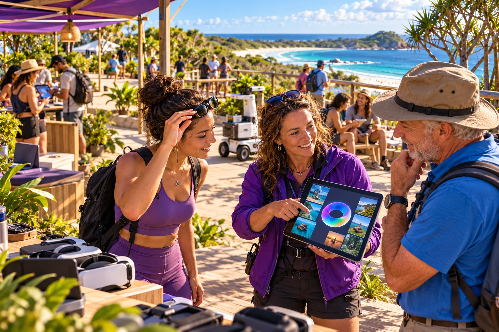
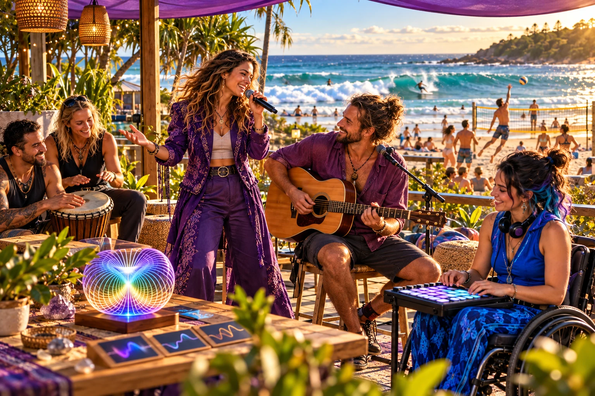
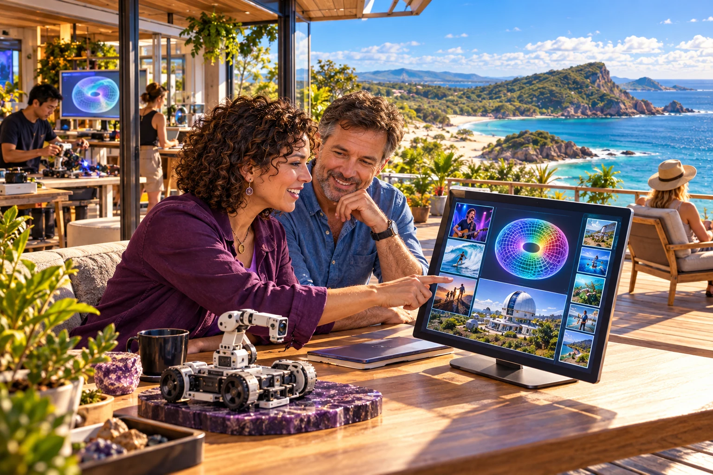

Visitors and residents
Choose an enjoyable encounter, decide what it may observe and review what the account means to you.
Follow two example visits ↗A fair go in the age of superintelligence
Engage with AI on your own terms. Through music, sport, culture and nature, this proposed personal Aura connects enjoyable experiences with reflection, judgement and the life you choose.

The qualified self · A Protopian direction
Luke Nathan Hayes’s proposal asks how growing intelligence could give people a fair go: more understanding, practical agency and opportunity to shape their own lives. Tourism supplies real encounters through which a person and their Aura could learn together.
Ethical engagement starts with a purpose you choose. You decide what may be observed and shared, question an interpretation, and correct what it misses. Steps, recordings and other measurements add context to your own explanations, values and experience. A useful result should carry into a later encounter and remain open to review.
Your words, circumstances, interests and boundaries form a starting account.
Choose a real encounter, use suitable assistance and question what the technology contributes.
Keep useful learning, correct the interpretation and choose your next step, including rest.
Find your scene
Enjoyment and ambition belong in the same life. Make music, learn a sport, meet a host, explore a place or take a break. The proposed Aura supports a richer account of what you discover and the capability you want to develop.
Find an experience
A small beginning
Try a reflection prompt for an imagined encounter. These prompts are examples; your choice stays in this page and no personal record is collected.
Before: what kind of company, sound and setting would you enjoy?
After: what mattered most — the music, the people, the place or the chance to take part?
Read the music encounter ↗
A place to begin
Luke Nathan Hayes’s proposal begins on Minjerribah / North Stradbroke Island, widening through Redlands, Brisbane and Australia. A bounded first trial would test whether reviewed personal context helps in a later encounter.
Brisbane 2032 is a development horizon. The programme, pilots and connections described here remain proposals.
Follow the placesTake the longer journey
Eleven chapters keep the complete original narrative and tables, with a source library alongside them.
Begin with a person, their own words and what they want from an experience. Explore the qualified self, a minimum viable starting account and an Aura that returns its interpretations for correction.
Read the chapter ExperienceFollow two imagined visits to Straddie: a person travelling alone and a group with different interests. Their choices, access needs and reflections shape the encounter, and what comes next.
Read the chapter BeginA measurement cannot explain a lived experience on its own. See how personal explanations, reflection, correction and a memory palace could connect one encounter with the next.
Read the chapter ExperienceFind your scene through music, have a go at sport, meet the people who host a place, or enjoy nature at your own pace. The proposal treats pleasure and participation as settings for personal development.
Read the chapter ExperienceUseful access information is specific to the person and the actual environment. Explore how chosen personal context and a conversation with the host could support participation and self-development.
Read the chapter HostTourism operators, volunteers and community hosts each bring something different. Follow the proposed relationship before, during and after a visit, and how voluntary contribution could receive non-monetary recognition.
Read the chapter HostConnect a person’s intention with actual service responsibilities. Read the proposal’s approach to relevant rules, clear offers, changes, personal data ownership and the difference between sensing, interpretation and action.
Read the chapter PlaceBegin with a bounded local experience on Straddie, then explore a dependable second setting through Redlands and Brisbane. Personal context and changing place conditions need identifiable sources and responsibilities.
Read the chapter DevelopThe proposal uses Brisbane 2032 as a horizon for growing useful personal and civic capability. Its staged sequence is an ambition to test, with Games roles and recruitment remaining the responsibility of the organisers.
Read the chapter DevelopExplore specific questions for tourism bodies, service departments and coordinating agencies, followed by the people, equipment and continuity a defined stage would need. These are proposed discussion questions, rather than agreed partnerships or funding.
Read the chapter DevelopReview whether the self-account is faithful, whether correction helps and whether people gain practical agency, enjoyment and continuity. The invitation leaves room for learning, contribution and chosen rest.
Read the chapterVisitors, hosts and public agencies
Choose an enjoyable encounter, decide what it may observe and review what the account means to you.
Follow two example visits ↗Define the offer, support access and distinguish paid roles from freely given contribution.
Explore hosting and C-Hours ↗Consider a defined stage, its responsibilities, resources and evidence of lasting benefit.
Read the discussion questions ↗Aura Tourism is a public proposal, not a booking service or a claim of an operating tourism programme. The original document and its source labels remain available for review.
Open the source librarySee connected projects